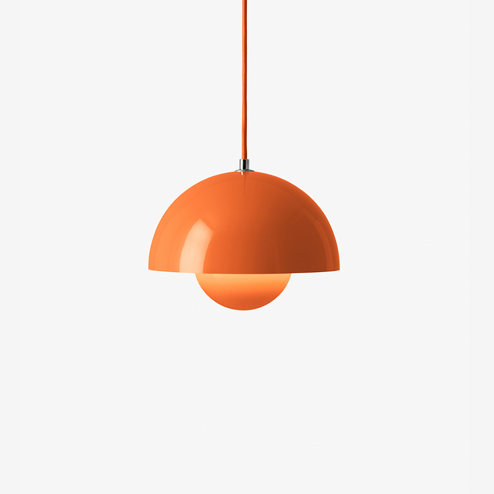

사진 확대 ↗조금 더 크게 · 비교 대안
&Tradition Flowerpot VP1
Zesty Orange · 지름 23cm
430,000원무료배송 · 전구·설치비 별도 확인
지름23cm로, 선택한16cm VP10보다 존재감이 큰 대안입니다.
- 크기
- 지름 23 × 높이 16cm · 0.95kg
- 소재
- 도장 스틸 갓 · 패브릭 코드
- 전구
- 국내 판매 상품정보: E26 최대 40W. 해외 설명서 E27 표기와 구분하여 국내 공급품 기준으로 확인.
- 설치
- 천장 직결형. 천장 브래킷 고정과 전원 연결이 필요하며 콘센트에 바로 꽂는 완제품이 아닙니다. 설치비 별도 확인. 플러그형 선택지는 확인되지 않았습니다.
전기 연결이 필요하므로 무배선 조건으로 바로 구매할 제품은 아닙니다. 전구·시공비는 표시 가격에 포함했다고 볼 수 없습니다.
3일 이내 배송 시작 안내. 5만원 이상 배송 무료; 제주·도서산간 4,000원 추가. 이 오렌지 판매 페이지의 리뷰 0개
할인 조건·폰 제어
표시 판매가 430,000원. 로그인 화면의 나의 구매 가능 가격 395,000원, 무신사 삼성카드 결제 시 359,000원은 조건부 혜택이며 카드 가격에 반영하지 않았습니다.
앱 기능 내장 제품이 아닙니다. 스마트플러그를 직접 연결할 수 없고, 스마트전구는 소켓·전구 크기·정격 호환을 별도 확인해야 합니다.